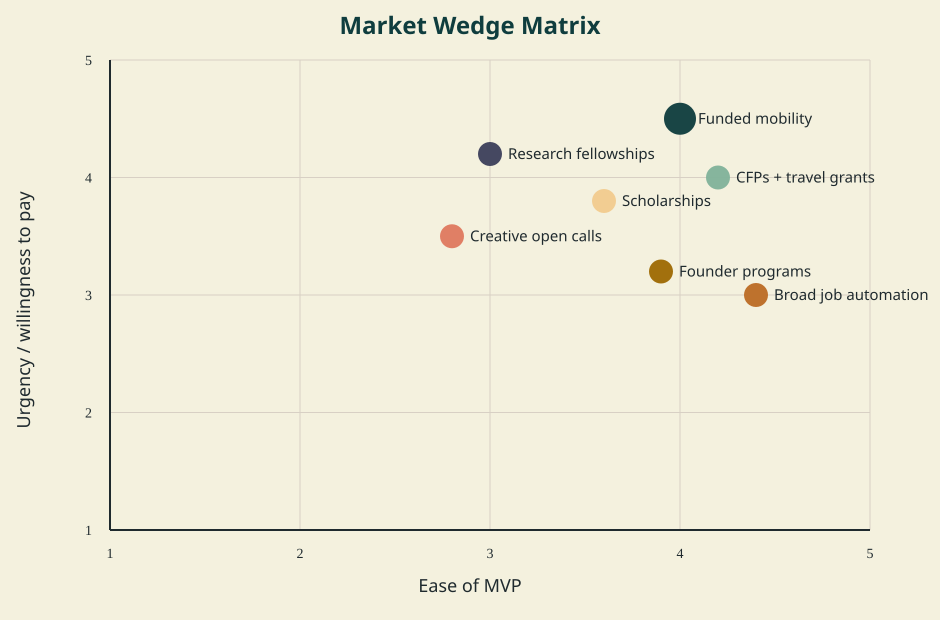
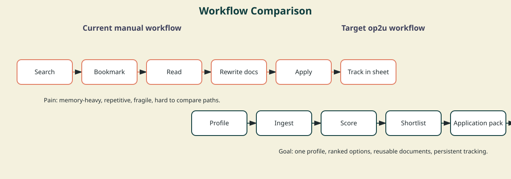
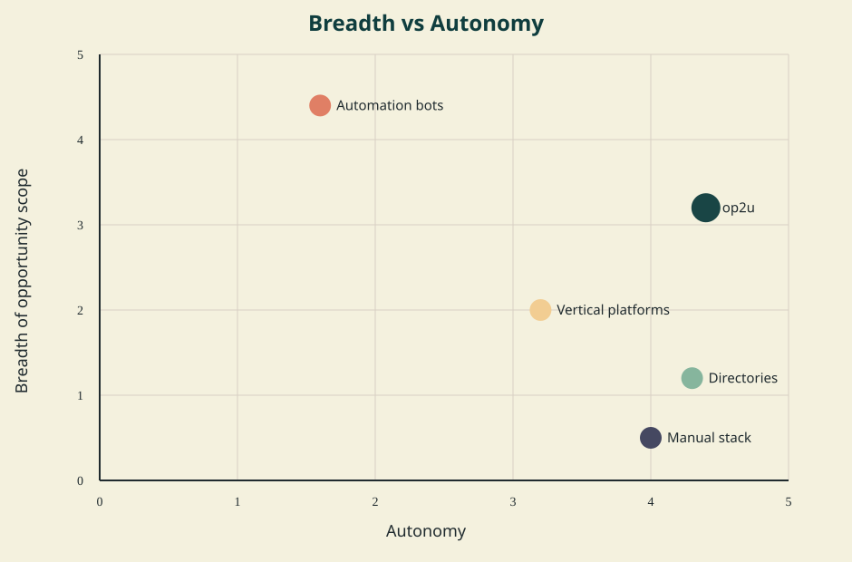
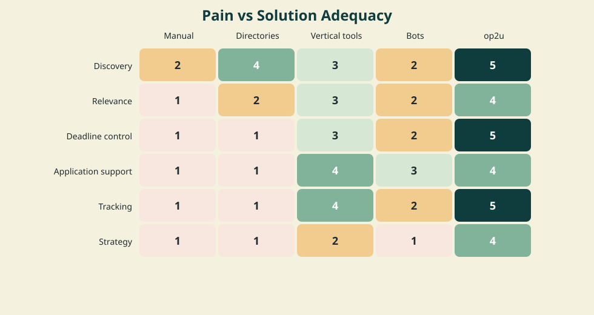
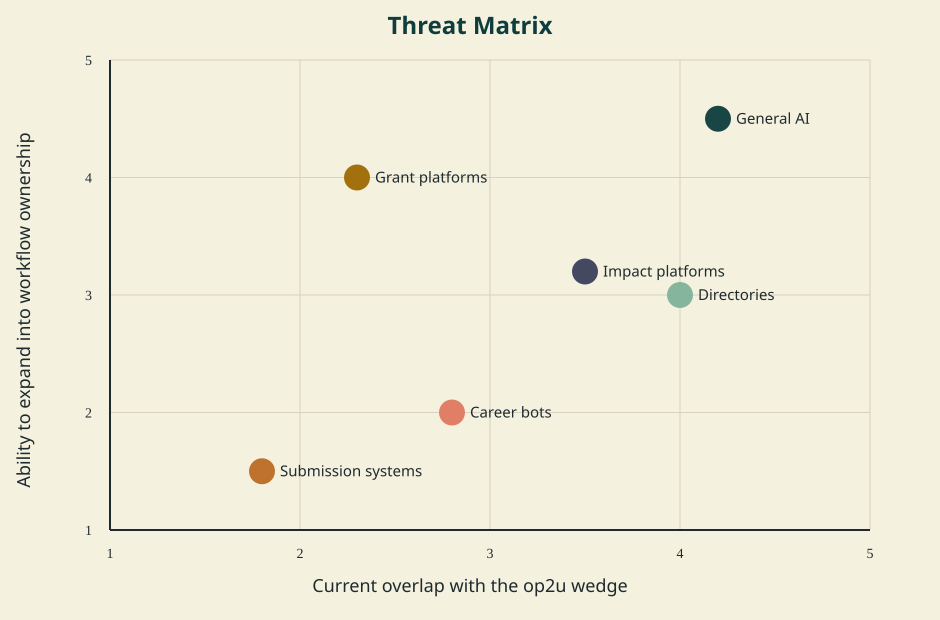

op2u Competitor Analysis
Prepared on 2026-05-03. Output style: LONG_READ.
Method: official product pages and pricing pages were prioritized; institutional descriptions were used where vendors gate details; user-forum links were used only for perceived weakness signals; company-reported metrics are treated directionally, not as audited facts.
0. One score legend keeps the judgment consistent.
- 0 = absent
- 1 = weak
- 2 = partial
- 3 = usable
- 4 = strong
- 5 = best-in-class
1. Go, but only as a funded-mobility operating system.
The idea is viable if op2u stops trying to look like a universal job bot and instead becomes a trusted opportunity workflow for ambitious people navigating scholarships, fellowships, conferences, research mobility, founder programs, and adjacent career moves. The winning move is to own ranking, deadlines, and reusable application context before owning submission.
| Decision | Answer | Why | Risk | Next action |
|---|---|---|---|---|
| Verdict | GO, but narrow hard | There is whitespace above fragmented directories and below risky full automation. | Breadth creep will dilute the product before it proves repeat use. | Start with one funded-mobility wedge and one workflow loop. |
| Best wedge | Funded international mobility | High fragmentation, real deadlines, repeated documents, and visible user outcomes. | WTP is moderate, not enterprise-grade. | Prioritize fellowships, scholarships, CFP travel grants, and research mobility. |
| First user | Ambitious international early-career talent | They face multi-track choices across jobs, scholarships, conferences, and fellowships. | Too broad a persona will break onboarding. | Recruit 15 pilot users from researcher/builder/student cohorts. |
| MVP | Radar + fit score + deadline CRM + application pack | This solves the whole workflow without needing unsafe auto-submit. | Could look like “yet another tracker” if discovery quality is weak. | Win on source quality and recommendation quality first. |
| Biggest risk | Trying to be a universal job bot | The job-auto-apply market is already crowded and legible. | The team ends up competing head-on with better-funded point tools. | Keep jobs as one category, not the identity. |
| Next action | Run a concierge pilot | Need proof of repeat workflow and payment before platform breadth. | Without manual proof, product decisions are guesswork. | Deliver shortlists and assisted applications for 30 days. |
| Kill criteria | No repeat use or payment signal in 30-45 days | Discovery alone is not enough; workflow pull must exist. | False positives could waste months. | Stop if users do not return weekly or refuse to pay. |
So what? The product should launch as a decision-and-execution layer over fragmented opportunities, not as another content site and not as a fully autonomous application agent.
2. The market is attractive because fragmentation is high and workflow support is weak.
- Situation: Opportunity supply is already abundant across jobs, scholarships, grants, residencies, CFPs, and startup programs.
- Complication: Supply is split across dozens of vertical products, while the most automated tools mostly focus on jobs.
- Insight: The durable gap is not another listing site; it is a cross-vertical workflow that remembers profile, deadlines, documents, and tradeoffs.
- Recommendation: Enter through funded international mobility, where fragmentation and document repetition are both high.
- Next action: Manually deliver the end-to-end workflow for a small cohort before building autonomous submission.
- What is happening? Opportunity discovery is abundant, but scattered across many vertical products and official sites.
- What is broken? Users can discover some leads, but still manually compare fit, watch deadlines, rewrite documents, and track outcomes.
- Why now? AI makes extraction, summarization, and document reuse cheap; meanwhile, general AI raises user expectations for assistive workflow.
- What must be true? The ranking must outperform search plus spreadsheet, and the workflow must create repeat weekly use.
- What should the startup do? Focus on a high-friction wedge where discovery, decision, and document reuse all matter.
Evidence base: JobCopilot, Sonara terms, Huntr pricing, Jobscan, Fastweb, ProFellow, EURAXESS, Instrumentl pricing, Impactpool support, TransArtists, Sessionize pricing, Devpost, F6S.
3. Five archetypes matter more than any single competitor.
| Archetype | Solved pain | Strength | Weakness | Threat level | How to beat |
|---|---|---|---|---|---|
| Career automation bots | High-volume job applying | Strong autonomy and obvious time savings | Jobs only; weak strategic choice quality | 3 | Do not lead with jobs. Win on cross-vertical planning and trusted assistance. |
| Opportunity directories | Awareness of open calls | Broad surface area and SEO | Weak personalization and no owned workflow | 4 | Use profiles, ranking, and deadlines to make discovery actionable. |
| Workflow optimizers and grant systems | Resume/grant prep and tracking | Sticky once work starts | Mostly vertical or expensive | 3 | Offer lighter-weight personal workflow across categories. |
| Submission and CFP systems | Official application intake | Trusted endpoint and real process ownership | Downstream of discovery | 2 | Route into them instead of competing with them. |
| General AI and manual stacks | Cheap ad hoc research and drafting | Flexible and already in the user’s pocket | No durable memory or structured execution | 4 | Become the system of record rather than the answer engine. |
So what? op2u is not entering one market. It is entering a workflow gap left between directories, vertical tools, official submission systems, and horizontal AI.
4. Funded international mobility beats broad jobs as the entry wedge.
| Segment | Pain | WTP | Fragmentation | Data | Automation | Risk | Total | Priority |
|---|---|---|---|---|---|---|---|---|
| Funded international mobility | 5 | 3 | 5 | 4 | 3 | 2 | 18 | 1 |
| CFPs plus travel grants | 4 | 3 | 4 | 4 | 3 | 2 | 16 | 2 |
| Research fellowships and visits | 5 | 4 | 4 | 3 | 2 | 3 | 15 | 3 |
| Scholarships and degree funding | 4 | 2 | 4 | 4 | 3 | 3 | 14 | 4 |
| Creative residencies and open calls | 4 | 2 | 5 | 3 | 2 | 2 | 14 | 5 |
| Founder programs and hackathons | 3 | 3 | 3 | 4 | 3 | 2 | 14 | 6 |
| Impact and UN careers | 4 | 3 | 4 | 3 | 2 | 3 | 13 | 7 |
| Broad AI job automation | 4 | 3 | 2 | 4 | 5 | 5 | 13 | 8 |

So what? Broad jobs look tempting because automation is feasible, but that wedge is crowded and policy-sensitive. Funded mobility has better fragmentation, better strategic value, and weaker end-to-end competition.
5. The MVP should own scoring, deadlines, and document reuse, not autonomous submission.
| Capability | Build now? | Why | Risk |
|---|---|---|---|
| Profile graph with constraints and goals | Yes | Everything else depends on reusable user context. | Weak onboarding ruins ranking quality. |
| Official-source opportunity ingestion | Yes | Trust and freshness matter more than raw volume. | Parsing reliability will vary by source. |
| Eligibility and fit scoring | Yes | This is the decision layer directories do not own. | False confidence if scoring is opaque. |
| Deadline and status CRM | Yes | Creates repeat weekly usage. | Could look generic without strong discovery. |
| Reusable application pack | Yes | Document reuse is where time savings become tangible. | Needs strong versioning and user control. |
| Human-in-the-loop submission support | Yes | Safer than auto-submit and still valuable. | May feel less magical in demos. |
| Full autonomous application submission | No | It increases trust, policy, and quality risk too early. | A single bad submission can damage trust. |
| All-jobs coverage | No | The market is crowded and noisy. | Pulls the product into commodity competition. |
| Institution-specific integrations | No | Premature before workflow fit is proven. | Integration work can swallow the roadmap. |
Current workflow: Search -> filter -> decide -> rewrite -> apply -> track manually
Target workflow: Profile -> ingest -> score -> shortlist -> application pack -> approve/submit -> status -> improve

So what? The first durable moat is not crawling more pages. It is reducing the total coordination cost of opportunities that already exist.
6. op2u can own broad scope with medium autonomy if it stays human-in-the-loop.

| Pain | Manual | Directories | Vertical tools | Bots | op2u |
|---|---|---|---|---|---|
| Discovery | 2 | 4 | 3 | 2 | 5 |
| Relevance | 1 | 2 | 3 | 2 | 4 |
| Deadline control | 1 | 1 | 3 | 2 | 5 |
| Application support | 1 | 1 | 4 | 3 | 4 |
| Tracking | 1 | 1 | 4 | 2 | 5 |
| Strategy | 1 | 1 | 2 | 1 | 4 |

So what? Directories win at awareness, bots win at volume, and workflow tools win inside one vertical. op2u should sit above them as the user-owned operating layer.
7. B2C subscription alone is weak; concierge plus later institutional distribution is stronger.
| Model | Buyer | Why pay | Risk | Test |
|---|---|---|---|---|
| Consumer subscription | Individuals | Saved time, fewer missed deadlines, reusable documents | Moderate WTP and churn risk | Offer a narrow premium pilot at $15-30/month equivalent. |
| Concierge / application-pack fee | Individuals with urgent goals | High-stakes deadlines justify hands-on support | Service margins do not scale well | Sell assisted application sprints first. |
| Institutional license | Universities, fellowships, career centers | Outcomes and visibility for their talent pools | Long sales cycle and custom asks | Only test after consumer workflow is proven. |
| Sponsored distribution / affiliate | Programs and organizers | Access to relevant talent | Can destroy trust if ranking becomes pay-to-play | Keep off by default during validation. |
So what? A subscription can work, but only after the product proves it materially improves shortlist quality and execution. Early revenue should come from assisted workflow, not from thin AI access.
8. Breadth creep, low WTP, and trust risk can kill the idea quickly.
| Risk | Severity | Evidence needed | Test | Mitigation |
|---|---|---|---|---|
| Breadth creep | High | Users cannot explain the first use case clearly | Ask pilots to describe the product in one sentence | Constrain the wedge and onboarding choices. |
| Low willingness to pay | High | Users love discovery but will not pay for workflow | Charge from the first concierge cohort | Use paid pilots before SaaS polish. |
| Trust failure | High | Users doubt accuracy or source legitimacy | Show every source and confidence score | Official-source-first ingestion and user review. |
| Weak ranking quality | High | Users reject top matches as irrelevant | Compare expert vs algorithmic shortlists | Keep scoring interpretable and preference-aware. |
| Automation / policy risk | Medium | Submission automation breaks on target sites or damages accounts | Delay auto-submit and log friction manually | Stay human-in-the-loop early. |
| International eligibility complexity | Medium | Too many false positives by country, visa, or status | Track rejection reasons per opportunity | Model hard constraints explicitly before ranking. |

- 7 days: interviews, manual shortlists, and a paid-concierge ask.
- 30 days: one narrow cohort using shortlist, tracker, and application packs.
- 90 days: productized ingestion, scoring, and retention tests before any autonomy expansion.
So what? The fastest way to fail is to scale discovery before proving that users trust the ranking and return for workflow.
9. A 90-day plan should validate repeat use before product breadth.
| Period | Goal | Work | Success metric |
|---|---|---|---|
| 0-7 days | Validate pain | 15 interviews + 5 manual shortlists | Users confirm the workflow problem is real |
| 8-30 days | Validate workflow | Concierge MVP with tracking, shortlist, and application pack | Users return weekly and at least 3 pay |
| 31-60 days | Productize the loop | Structured ingestion, scoring, deadline CRM, document reuse | Shortlist acceptance and prep-time reduction improve |
| 61-90 days | Test repeatability | Pricing, acquisition channel tests, cohort retention | Retention and paid conversion hold without manual heroics |
So what? Shipping more categories is not progress if the first cohort does not come back on its own.
10. Final verdict: GO, but narrow hard and delay auto-apply.
| Item | Answer |
|---|---|
| Verdict | GO, but narrow |
| Best wedge | Funded international mobility for ambitious early-career talent |
| MVP | Discovery + fit scoring + deadline CRM + application pack + human approval |
| Biggest threat | General AI plus fragmented vertical directories making “good enough” discovery cheap |
| Dangerous assumption | Users will pay for workflow before they demand full automation |
| Kill criteria | No weekly repeat use and no payment signal from a 30-45 day pilot |
| Next action | Run the concierge pilot and measure shortlist acceptance, time saved, and payment |
Appendix A. The highest-signal competitor set already spans the key threat surfaces.
| Competitor | Archetype | User | JTBD | Features | Pricing | Scope | Scores | Strength | Weakness | Source | Confidence |
|---|---|---|---|---|---|---|---|---|---|---|---|
| EURAXESS | Opportunity directory | students and globally mobile talent | discover open calls across multiple opportunity types | jobs, funding offers, hosting offers, regional and EU funding references | mostly free, ads, partnerships, media | research mobility and funding | B4/A1/W2/T2/H5 | official network effects and strong researcher trust | research-focused and not a personal opportunity OS | source | High |
| ChatGPT | General AI/search assistant | everyone | search, summarize, and brainstorm on demand | chat, drafting, reasoning, ad hoc research | free and subscription | horizontal | B5/A2/W1/T3/H4 | easy default tool for opportunity brainstorming and writing help | no owned database or persistent opportunity CRM by default | source | Medium |
| Impactpool | Impact career platform | mission-driven professionals | find roles and programs in impact sectors | jobs, talent pools, alerts, employer branding, impact-sector events | freemium, subscriptions, recruiting SaaS | impact careers and programs | B3/A1/W2/T3/H4 | strong fit for NGO and public-sector careers | career vertical rather than broad opportunity planner | source | High |
| Perplexity | General AI/search assistant | everyone | search, summarize, and brainstorm on demand | citation-heavy search and answer workflow | free and subscription | horizontal | B5/A2/W1/T3/H4 | good substitute for discovery and quick filtering | little structured execution workflow | source | Medium |
| ProFellow | Opportunity directory | students and globally mobile talent | discover open calls across multiple opportunity types | curated fellowships, graduate programs, accelerators, application guidance | mostly free, ads, partnerships, media | fellowships and funded programs | B4/A1/W1/T2/H4 | crosses categories that look much closer to op2u than job tools do | still directory-heavy rather than workflow-heavy | source | High |
| Devex | Impact career platform | mission-driven professionals | find roles and programs in impact sectors | development jobs, career account, employer access, media | freemium, subscriptions, recruiting SaaS | impact careers and programs | B3/A1/W2/T3/H3 | trusted brand in global development careers | gated content and vertical focus | source | High |
| Devfolio | Founder opportunity platform | founders, hackers, builders | find startup programs, hackathons, jobs, and visibility moments | single application layer for hackathons | free to users, sponsorships, recruiting, SaaS | founder and builder opportunities | B3/A1/W2/T3/H3 | good UX and direct builder relevance | geographically and category concentrated | source | High |
| Devpost | Founder opportunity platform | founders, hackers, builders | find startup programs, hackathons, jobs, and visibility moments | public, internal, customer, and student hackathons | free to users, sponsorships, recruiting, SaaS | founder and builder opportunities | B3/A1/W2/T3/H3 | strong network effects in hackathons and builder discovery | hackathon-centric | source | High |
| F6S | Founder opportunity platform | founders, hackers, builders | find startup programs, hackathons, jobs, and visibility moments | founder programs, funding, jobs, perks, applications | free to users, sponsorships, recruiting, SaaS | founder and builder opportunities | B3/A1/W2/T3/H3 | huge founder distribution and many program applications in one place | founder-only and noisy | source | High |
| Fastweb | Scholarship aggregator | students and degree applicants | find scholarships and funding opportunities | scholarship search, financial-aid content, vetted listings | free | education funding | B3/A1/W2/T2/H3 | free and large database for student funding | college-centric and largely U.S.-oriented | source | High |
| JobCopilot | Career automation bot | active job seekers | find, autofill, and submit many job applications quickly | AI job discovery and automated applications | freemium or subscription | jobs only | B1/A5/W2/T2/H3 | clear value proposition around application volume | quality control and strategic fit remain limited | source | Medium |
| Res Artis | Creative open-call network | artists, writers, filmmakers, designers | find residencies, open calls, and creative submissions | worldwide artist residency network and member listings | free, submission fees, SaaS for organizers | creative opportunities | B3/A1/W2/T2/H3 | network legitimacy in arts residencies | more network than workflow product | source | Medium |
| ScholarshipOwl | Scholarship aggregator | students and degree applicants | find scholarships and funding opportunities | eligibility matching and scholarship workflow support | free, freemium, lead generation, sponsorship | education funding | B3/A1/W2/T2/H3 | automation language resonates with overwhelmed students | still single-vertical and often distrusted by scholarship communities | source | High |
| Simplify | Career automation bot | active job seekers | find, autofill, and submit many job applications quickly | autofill extension, job discovery, AI resume tailoring, tracking | freemium or subscription | jobs only | B1/A5/W3/T2/H3 | large student and early-career job workflow presence | still job-centric and not a life-opportunity planner | source | Medium |
| Submittable Discover | Creative open-call network | artists, writers, filmmakers, designers | find residencies, open calls, and creative submissions | opportunity discovery tied to a submission platform | free, submission fees, SaaS for organizers | creative opportunities | B3/A1/W2/T2/H3 | bridges discovery and actual submission portal | stronger in writing and arts than broad mobility | source | High |
| TransArtists | Creative open-call network | artists, writers, filmmakers, designers | find residencies, open calls, and creative submissions | residency database, open calls, guides | free, submission fees, SaaS for organizers | creative opportunities | B3/A1/W2/T2/H3 | largest residency database claim and strong niche trust | creative-vertical only | source | High |
| Wellfound | Founder opportunity platform | founders, hackers, builders | find startup programs, hackathons, jobs, and visibility moments | startup jobs and recruiting | free to users, sponsorships, recruiting, SaaS | founder and builder opportunities | B3/A1/W2/T3/H3 | startup-specific labor market and candidate network | jobs-first, not multi-opportunity | source | High |
| spreadsheets | Manual stack | everyone | discover and track opportunities with general tools | manual list building, status tracking, deadlines | free or low cost | horizontal but manual | B4/A0/W1/T3/H3 | cheap and flexible for small pipelines | breaks once opportunities and documents multiply | estimate | Medium |
| GrantForward | Grant database | researchers and grant seekers | find funders and maintain a funding pipeline | advanced search, personalized grant recommendations, database of sponsors and opportunities | subscription or enterprise | research and grant funding | B2/A1/W4/T4/H2 | established academic funding database | research-specific and institution-led usage | source | High |
| Huntr | Career workflow optimizer | active job seekers | improve resumes and track applications | job tracker, AI resumes, autofill, insights | free tier plus Pro at $40/month list price | jobs only | B1/A1/W4/T3/H2 | better workflow depth than pure bots | still a jobs-only tool | source | High |
| Instrumentl | Grant database | researchers and grant seekers | find funders and maintain a funding pipeline | grant prospecting, tracking, peer prospecting, integrations, AI apply advisor | Standard $299/mo, Pro $499/mo, Advanced $899/mo annual billing equivalents published | research and grant funding | B2/A1/W5/T4/H2 | serious end-to-end grant workflow depth | institutional price point and nonprofit framing | source | High |
| Jobscan | Career workflow optimizer | active job seekers | improve resumes and track applications | resume scanner, ATS match scoring, LinkedIn optimization, tracker | subscription; detailed plan page is partly gated | jobs only | B1/A1/W3/T3/H2 | strong resume-optimization brand | risk of false precision and over-optimization | source | Medium |
| OpenGrants | Grant database | researchers and grant seekers | find funders and maintain a funding pipeline | grant database across federal, state, local sources | subscription or enterprise | research and grant funding | B2/A1/W4/T4/H2 | modern grant data layer with API orientation | public-capital focus rather than life-opportunity breadth | source | High |
| Sessionize | Event submission platform | speakers, organizers, community leaders | discover or manage CFPs and speaker submissions | CFP, schedule, speaker management | free for community events; professional event plan listed at $499/event | events and speaking | B2/A1/W3/T3/H2 | dominant workflow tool once a conference adopts it | not a discovery-first user agent | source | High |
Full competitor master table delivered separately in op2u_competitor_master_table.csv.
Appendix B. The source log highlights the factual claims that drive the decision.
| Claim | Source URL | Source type | Date checked | Confidence | Notes |
|---|---|---|---|---|---|
| Job automation bots already promise end-to-end discovery plus application submission. | link | official product page | 2026-05-03 | Medium | Used to confirm the current auto-apply positioning of job-agent competitors. |
| Sonara describes itself as using AI to search for job postings and apply on the user’s behalf. | link | official terms | 2026-05-03 | High | Evidence that the jobs market already has explicit automation competitors. |
| ApplyFastAI positions around job-board coverage, AI screening, and auto-apply flows. | link | official product page | 2026-05-03 | Medium | Supports the finding that the jobs wedge is crowded and feature-legible. |
| Huntr publishes a free tier and Pro pricing with job tracking and resume tooling. | link | official pricing | 2026-05-03 | High | Useful benchmark for consumer job-workflow pricing. |
| Jobscan’s current positioning extends beyond ATS scanning into tracking and LinkedIn optimization. | link | official product page | 2026-05-03 | High | Supports the “workflow optimizer” archetype. |
| Fastweb says it is free and that its scholarship database is researched and vetted by a human team. | link | official product page | 2026-05-03 | High | Evidence that scholarship discovery platforms compete on trust, not just volume. |
| ProFellow covers fellowships, graduate programs, awards, and accelerators, not just one opportunity type. | link | official product page | 2026-05-03 | High | One of the closest discovery competitors to op2u’s cross-category ambition. |
| EURAXESS combines jobs, funding, and hosting offers and exposes national, regional, and EU-level funding paths. | link | official product page | 2026-05-03 | High | Important proof that official networks can already bundle several opportunity layers inside one trusted niche. |
| Instrumentl publishes grant-search and workflow pricing from $299/month upward. | link | official pricing | 2026-05-03 | High | Useful benchmark for how much workflow depth is worth in the grant market. |
| GrantForward positions around advanced search and personalized recommendations. | link | official product page | 2026-05-03 | High | Supports the conclusion that the research-funding niche already values structured databases. |
| Pivot-RP is described by MIT as a searchable global funding database with sponsor and researcher discovery. | link | institutional description | 2026-05-03 | High | Cross-check on the research-funding incumbent set. |
| OpenGrants positions as a database for public funding opportunities across federal, state, and local sources. | link | official product page | 2026-05-03 | High | Shows AI/data-native movement in grant discovery. |
| Submittable Discover is explicitly an opportunity-discovery layer tied to a submission system. | link | official product page | 2026-05-03 | High | Important example of discovery plus downstream workflow in a single product family. |
| Impactpool aggregates vacancies across UN agencies, NGOs, INGOs, EU institutions, foundations, and development banks. | link | official support article | 2026-05-03 | High | A vertical career platform that looks strong in the impact wedge. |
| Devex sells a career account around access to top development employers and exclusive jobs. | link | official landing page | 2026-05-03 | High | Confirms monetized impact-sector career discovery. |
| TransArtists claims more than 1,700 residencies and positions itself as the largest residency database. | link | official product page | 2026-05-03 | High | Evidence that some niches already have deep supply-side coverage. |
| Sessionize publishes a free community tier and a $499 professional event plan. | link | official pricing | 2026-05-03 | High | Benchmarks workflow value on the organizer side of CFPs. |
| Devpost serves public, internal, customer, and student hackathons. | link | official product page | 2026-05-03 | High | Shows hackathon infrastructure already has a strong incumbent. |
| F6S claims to connect millions of founders and startups to funding, jobs, programs, and perks. | link | official product page | 2026-05-03 | Medium | Company-reported scale, used directionally rather than as an audited metric. |
| Wellfound currently markets a large startup-job inventory and startup-focused talent pool. | link | official product page | 2026-05-03 | High | Relevant if op2u drifts back toward generic startup jobs. |
| Y Combinator still takes direct online applications, reminding us that some high-value opportunities are direct brands, not marketplace nodes. | link | official application page | 2026-05-03 | High | Important for why op2u should route users to official endpoints rather than replicate them. |
| Users report that ATS-match tools can feel low-signal or misleading when scores stay low despite strong fit. | link | user forum | 2026-05-03 | Medium | Not proof of product failure; evidence of perceived false precision risk. |
| Users question whether premium job-workflow subscriptions deliver enough incremental value over free versions. | link | user forum | 2026-05-03 | Medium | Used to stress willingness-to-pay risk in B2C career tooling. |
| Scholarship communities routinely advise checking official sponsor pages because aggregator trust is uneven. | link | user forum | 2026-05-03 | Medium | Supports the recommendation to preserve an official-source-first model. |
Appendix C. The dangerous assumptions are explicit and testable.
| Assumption | Why it matters | How to test | Pass criteria |
|---|---|---|---|
| Users will pay for a cross-vertical opportunity workflow before they trust full automation. | Determines whether the MVP can monetize without auto-submit risk. | Sell a concierge-plus-dashboard pilot to 10-15 users. | At least 3 users pay or pre-commit after a manual pilot. |
| Funded international mobility has stronger repeat usage than generic job search. | Justifies the wedge and shapes data ingestion priorities. | Track whether users return weekly for deadlines and new matches. | 50% of pilot users engage in 3 or more weekly sessions. |
| A human-in-the-loop application workspace is enough to create value before autonomous submission exists. | Avoids premature trust and policy risk. | Measure saved time and submission completion rates with assisted workflows. | Median application-prep time falls by at least 50%. |
| Cross-vertical scoring can outperform raw directories in shortlist quality. | Core reason op2u exists instead of being a content business. | Compare manual expert shortlist vs op2u-scored shortlist on user acceptance. | Users accept 60% or more of top-10 scored opportunities. |
| Official-source routing plus structured extraction can keep trust high enough despite aggregator skepticism. | Trust is a gating factor for any opportunity product. | Show source transparency in pilot and survey perceived trust. | Average trust rating 4/5 or higher from pilot users. |